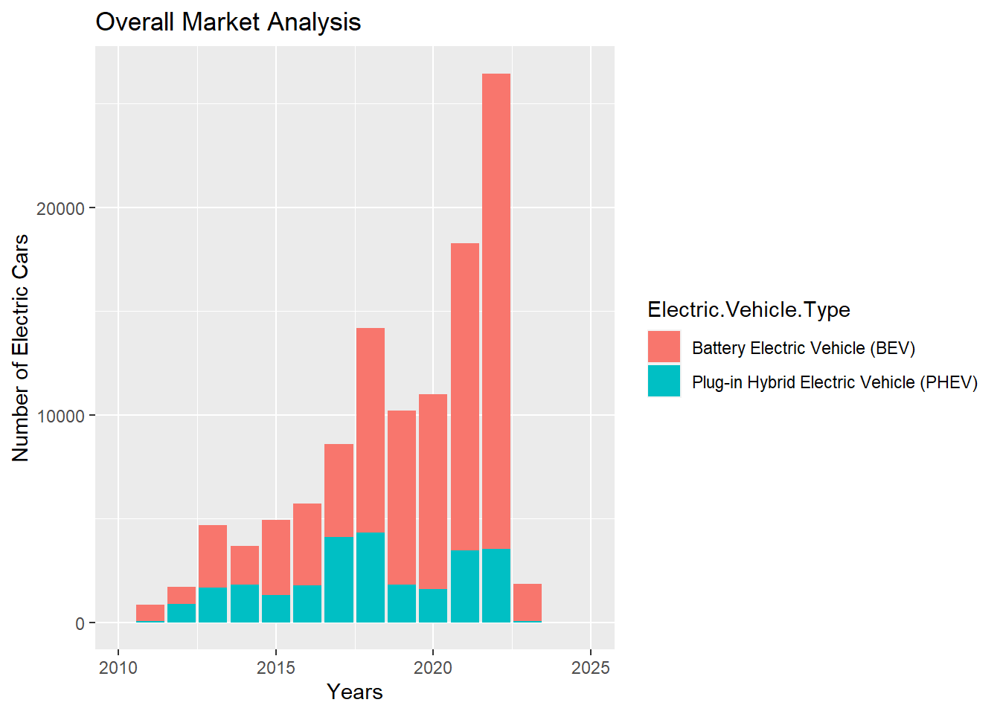
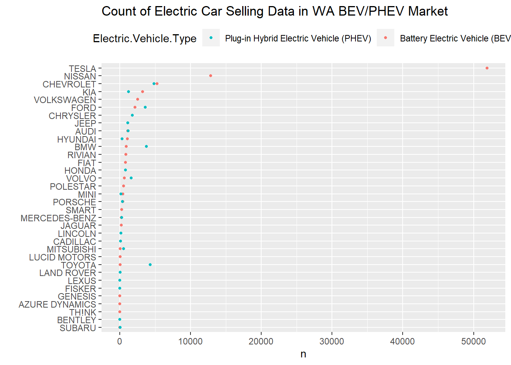
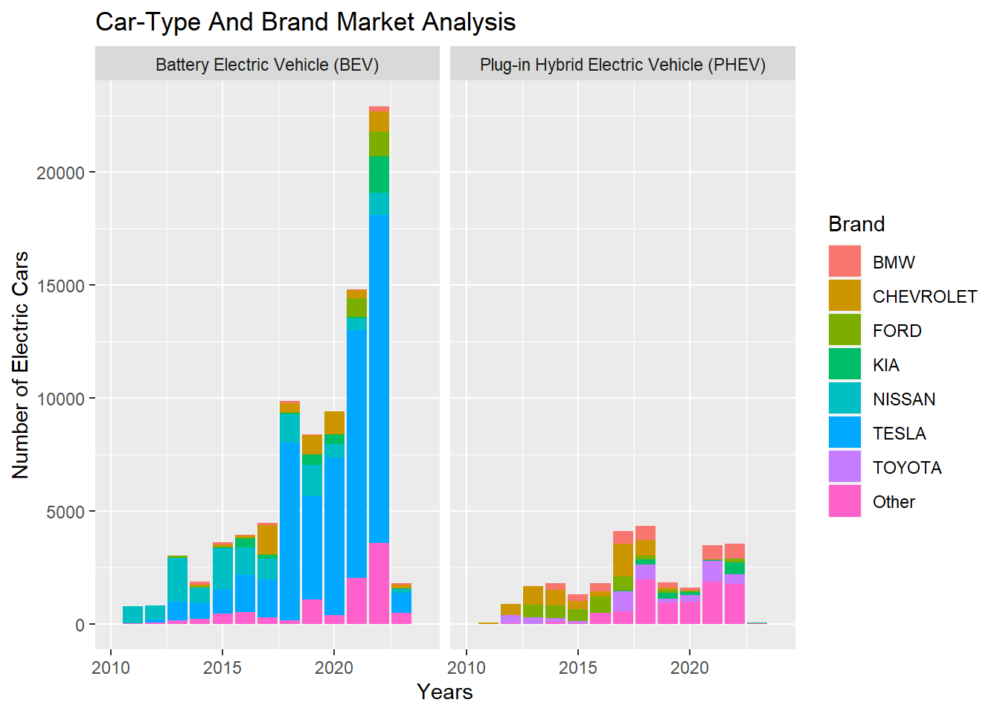
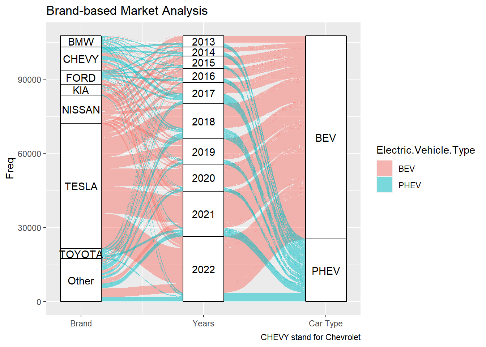
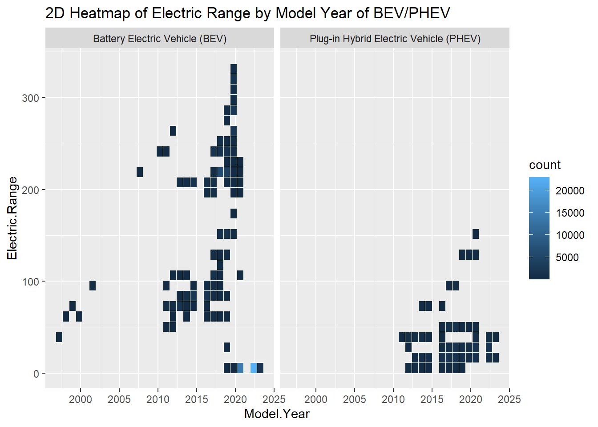
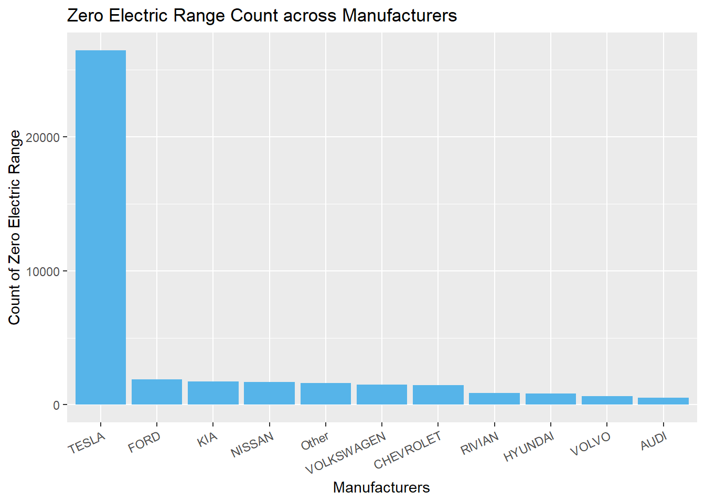
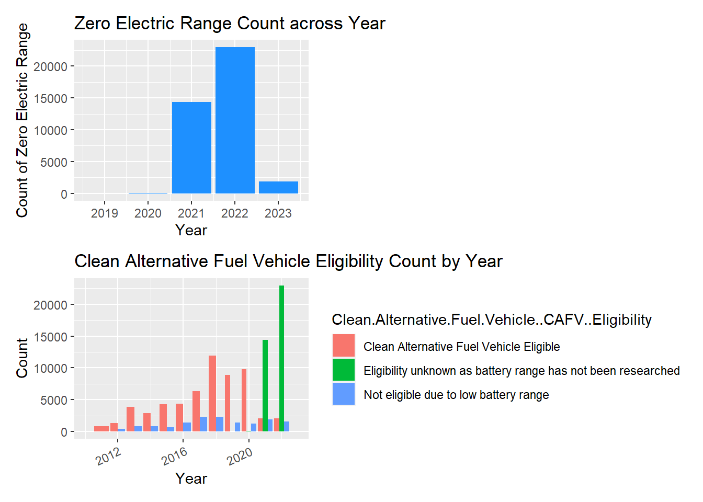
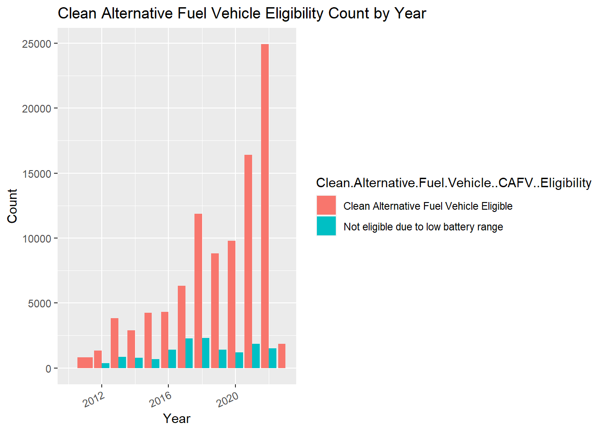
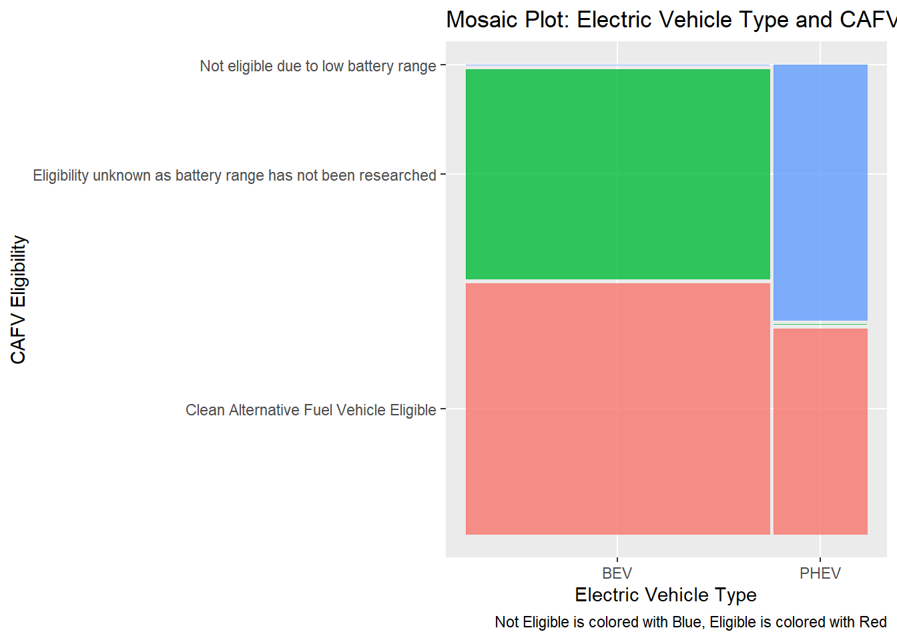
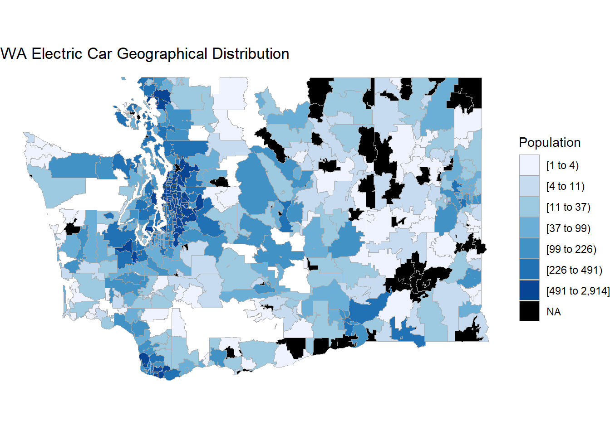

Chapter 4 Results
Library Setup: installed all related packages before further analyzing the data.
4.1 Before Analyzing:
- section 4.1, 4.2 and 4.4 will use the data that cleaning based on section 3.2 (Dataset after cleaning will be named as ‘df’)
- section 4.3 will use the raw data set data, which need to be loaded at the start of the 4.3 (Raw Dataset will be named as ‘raw’)
4.2 Overall Electric Cars Market Analysis for Washington State
4.2.1 Overall Electric Car Market in Washington
Showing the count of electric car from ‘Model.Years’ perspective
top-coding: if certain model.Year is below 1000 cars, we classified it as ‘Other’
## 2012 2013 2014 2015 2016 2017 2018 2019 2020 2021 2022 2023 Other
## 1695 4669 3665 4918 5709 8598 14190 10216 10998 18277 26455 1863 899The table above shows that most car model Years are between 2012-2023, which means that most buyers buy electric cars between 2012 and 2023. Hence, our marketing analysis will focus on the time zone between 2012-2023.
In the following analysis, we use the Model.Years to represent the time of the buyer buying the car, and add a new column ‘Years’ for the following analysis to represent the year of buying: ‘Years’ equal to ‘Model.Years’.
4.2.2 Overall Electric Car Market Bar Chart:
To further analyze the electric car market based on ‘Years’, it’s important to split it based on other columns.
After several attempts, we found out that it’s most proper to split the ‘Years’ data with Electric.Vehicle.Type
Variable type:
Model.Year: Discrete Ordinal Categorical Variable
Electric.Vehicle.Type: Nominal Categorical Variable
Plot Type: Bar plot
fill:Electric.Vehicle.Type

From the plot above, the market size of electric cars is continuously growing from 2012 to 2022, except in 2014 and 2019. The proportion of PHEV cars in all new electric cars are high in 2012,2014, and 2018. However, BEV cars dominated the Electric Vehicle market every year between 2012 to 2022. For 2022, more than 75% of the buyer buying BEV cars.
There are two major decreases in the Electric car market: 2014 and 2019. However, the two decreases is different: : the BEV amount is decreasing compared to 2013, but the PHEV amount is increasing compared to 2-13 : Both BEV and PHEV amounts are decreasing compared to 2017
4.3 Brand-Based Electric Cars Market Analysis for Washington State
Before analyzing the market share of each brand, our team will analyze the absolute Electric car selling data of each brand in Washington State.
Variable type:
Brand: Nominal Categorical Variable
Electric.Vehicle.Type: Nominal Categorical Variable
Plot Type: Cleveland dot plot
fill: Electric.Vehicle.Type
Order: BEV

We can observe from the plot that TESLA has the highest count in WA registered electric vehicles among all manufacturers, which is over 50,000 among 112,152 registered cars. The top five Battery Electric Vehicle manufacturers are TESLA, NISSAN, CHEVROLET, KIA, and VOLKSWAGEN. We can also observe that Battery Electric Vehicles count most registered battery vehicles.
4.3.1 Bar plot of Car-Type And Brand Market Analysis
To further analyze the market, it’s important to analyze the raw data based on the brand.
Due to too many brands involving the electric car market, we are only tracking the brand that sold at least 3000 cars before in Washington State.
Variable type:
Brand : Nominal Categorical Variable
Model.Year: Discrete Ordinal Categorical Variable
Electric.Vehicle.Type: Nominal Categorical Variable
Plot Type: Bar plot
fill: Brand
Facet: Electric.Vehicle.Type

From the graph above,
1. There are only 7 brands that sold more than 3000 cars in Washington State: BMW, CHEVROLET, FORD, KIA, NISSAN, TESLA, and TOYOTA
2. For the BEV market, NISSAN dominated the market from 2011 to 2015, and Tesla dominated the market from 2016 to 2022.
3. For the PHEV market, the market is more diverse: there doesn’t have a dominant brand PHEV market.
4. Tesla dramatically increase its sales in Washington State from 2015 to 2022, and has become the largest brand in the market since 2018. In 2022, Tesla is owned more than 50% market share in the BEV market.
5. NISSAN used to dominate the BEV market from 2011 to 2015. However, its annual sales never exceed 5000 cars. In 2022, its market share will be less than 10% in the BEV market.
6. CHEVROLET used to be the largest player in the PHEV market(2012, 2013, 2013, 2017, 2018). However, its market share in PHEV almost disappears after 2018. In contrast, it becomes a Top 5 player in the BEV market from 2017 to 2022.
7. The No.5 BEV market brand: VOLKSWAGEN, doesn’t sell more than 3000 cars in Washington State
4.3.2 Alluvial Graph with Brand, Years, and Electric.Vehicle.Type
To further analyze the composition of each brand’s year-based selling details, our team used an Alluvial graph to visualize the relationship between Brand, Years, and Electric.Vehicle.Type.
Variable type:
Brand : Nominal Categorical Variable
Model.Year: Discrete Ordinal Categorical Variable
Electric.Vehicle.Type: Nominal Categorical Variable
Plot Type: Alluvial Graph
fill: Electric.Vehicle.Type

From the graph above:
1. Three brands focus only on BEV cars: Tesla, Kia, and Nissan.
2. Two brands are almost focusing only on PHEV cars: Toyota, and BMW.
3. Ford focused only on PHEV cars from 2013 to 2017, and began to focus only on BEV cars from 2018 to 2022.
4. Chevrolet mainly sold PHEV cars from 2013 to 2017, but switched to mainly selling BEV cars from 2017 to 2022.
4.4 Electric Range Analysis for Electric Cars in Washington State
Based on reference, the electric range represents the miles a car can run with pure electricity, which is an important performance measurement of an electric car.
4.4.1 Overview of Electric Range Distribution of Range Data
Before further analyzing, our team will visualize the distribution of the Range of each electric car with a heat map.
Variable type:
Electric.Range : Quantitative Variable
Model.Year: Discrete Ordinal Categorical Variable
Electric.Vehicle.Type: Nominal Categorical Variable
Plot Type: Heat Map Facet: Electric.Vehicle.Type 
To find the relationship between Electric Range, Model Year, and Electric Vehicle Map, we create a 2d heatmap of the electric range of Electric Range against Model Year. From the plot, we make the following observations:
1. The Battery Electric Vehicle appears to have a higher Electric Range than Plug-in Hybrid Electric Vehicle before 2021.
2. Before 2021, there appeared to be an increasing trend for electric range for both electric vehicle types over the years.
2. After 2021, Battery Electric Vehicle appears to have 0 electric range from the dataset, which stands for missing value according to the
source website. From source notes, Electric Range is no longer maintained in the dataset because BEVs have a range of 30 miles or more.
4.4.2 Brand-based Analysis on Zero Values in Electric Range
According to the official document of our data source, Electric Range is no longer maintained for Battery Electric Vehicles (BEV) because new BEVs have an electric range of 30 miles or more. Zero (0) will be entered where the electric range has not been researched. In this section, we would like to investigate the zero values in Electric Range to see if we could find any insight behind it.
Variable type:
Brand : Nominal Categorical Variable
Electric.Range: Quantitative Variable
plot type: bar plot

As we can see from the bar chart above, most zero values appear in Tesla’s electric vehicles. It shows that Tesla produced a greater amount of new Battery Electric Vehicles (BEV) as compared to other manufacturers. There are over 25000 new BEV and the total number of new BEV of other manufacturers not even exceed 10000.
4.4.3 Year-based Analysis on Zero Values in Electric Range
Instead of a Brand-based analysis, our team will analyze the Zero value in the Electric Range from the ‘Years’ perspective.
Variable type:
Electric.Range: Quantitative Variable
Model.Year: Discrete Ordinal Categorical Variable
plot type: bar plot

If we focus on the model year, we can see that those new BEV boosted in 2021. The number of new BEV increased significantly starting from 2021, and it nearly achieved 15000. This number even went up to over 25000 in 2022. And if we count the Clean Alternative Fuel Vehicle Eligibility across model year, we will see that those with battery range not been researched are clustered around 2021 and 2022.
4.4.4 Data Cleaning on Zero Values in Electric Range
Given the explanation provided by the official document, those BEV with zero values in Electric Range have electric range 30 miles or more, and their corresponding Clean Alternative Fuel Vehicle (CAFV) Eligibility are set to “Eligibility unknown as battery range has not been researched”. The other 2 types of CAFV Eligibility are “Clean Alternative Fuel Vehicle Eligible” and “Not eligible due to low battery range”. If we assume there are only these three categories, and prove that BEV with electric range 30 miles or more do not suffer from “Not eligible due to low battery range”, then we can conclude that those with zero values in Electric Range are “Clean Alternative Fuel Vehicle Eligible”.
It turns out that most vehicles with Electric Range equal or greater than 30 belong to “Clean Alternative Fuel Vehicle Eligible”. Thus, combining the explanation of the official document we conclude that BEV with zero values in Electric Range are all in this category as well. Although this is not a rigorous proof, it should serve as an acceptable hypothesis in our analysis.
Variable type:
CAFV Eligibility : Nominal Categorical Variable
Years: Discrete Ordinal Categorical Variable
plot type: bar plot
fill= CAFV Eligibility
position = “dodge”

After we transform the Clean Alternative Fuel Vehicle (CAFV) Eligibility, there are only 2 categories left. Now, we can see that BEV that are eligible for CAFV shows an overall trend of increasing over the years and the total number reached its peak at around 2500 in 2022. We may infer that the sharp increase after 2020 are contributed by Tesla as shown in the previous plot, where Tesla produced more newly BEV from 2021 to 2022 as compared to its competitors.
4.4.5 Analysis of the CAFV Eligibility After Cleaning CAFV based on Electric.Range
After Cleaning CAFV based on Electric.Range, our team used a mosaic plot to analyze the relationship between CAFV Eligibility and Electric Vehicle Type.
Variable type:
CAFV Eligibility : Nominal Categorical Variable
Electric Vehicle Type: Nominal Categorical Variable
plot type: mosaic plot

We create a mosaic plot to observe the relationship between electric vehicle type and clean alternative fuel vehicle (CAFV) eligibility. From the plot, we can conclude a strong correlation between the two variables.
Based on Washington State Legislature (RCW) 82.12.809, “clean alternative fuel” means natural gas, propane, hydrogen, or electricity. By the definition of battery electric vehicles in the dataset source page, they use electricity only on one or more batteries to store electric power source.
Therefore, most battery Electric Vehicles are CAFV eligible, while for plug-in Hybrid electric vehicles, around 45 percent are CAFV eligible, and about 55 percent are not eligible.
Reference 1: Washington State Legislature
Reference 2: Original Data source for Data Set
4.5 Geographic-Based Analysis for Electric Cars in Washington State
In the last part of the ‘Result’ Section, our team analyzes the distribution of electric cars in Washington State based on their geographic location: ‘Postal.Code’ Column.
The following graph uses the Nominal Categorical variable: ‘Postal.Code’ to draw the Choropleth map

We compare the electric vehicle density map and Washington state regional map; we identify the regions where most electric vehicles are distributed: King, Pierce, Thurston, Kitsap, Mason, Whatcom, Clark, and Cowlitz. (region map reference)